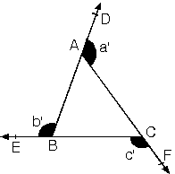
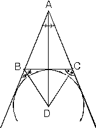

Doğrusal olmayan üç noktayı birleştiren üç doğru parçasının birleşimine üçgen denir.
| AB] È[AC]È [BC] = ABC dir.Burada;
A, B, C noktaları üçgenin köşeleri, [AB], [AC], [BC] doğru parçaları üçgenin kenarlarıdır. |
| BAC, ABC ve ACB açıları üçgenin iç açılarıdır. |BC| = a, |AC| = b, |AB| = c
uzunluklarına üçgenin kenar uzunlukları denir. iç açıların bütünleri olan açılara dış açılar denir. |
| ABC üçgeni bir düzlemi; üçgenin kendisi,iç bölge, dış bölge, olmak üzere üç bölgeye ayırır.ABC È {ABC iç bölgesi} = (ABC) (üçgensel bölge) |
1. Kenarlarına göre üçgen çeşitleri
a. Çeşitkenar üçgen
| Üç kenar uzunlukları da farklı olan üçgenlere denir. |
b. ikizkenar Üçgen
| Herhangi iki kenar uzunluklarıeşit olan üçgenlere denir. | |
c. Eşkenar Üçgen
| Üç kenar uzunluklarıda eşit olan üçgenlere denir. |
2. Açılarına göre üçgenler
a. Dar açılı üçgen
| Üç açısının ölçüsü de 90° den küçük olan üçgenlere dar açılıüçgen denir. |
b. Dik açılı üçgen
| Bir açısının ölçüsü 90° ye eşit olan üçgenlere denir.
Dik üçgen olarak adlandırılır. |
c. Geniş açılı üçgen
| Bir açısının ölçüsü 90° den büyük olan üçgenlere denir.
Bir üçgende bir tek geniş açı olabilir. |
Üçgenin kenarları’ na ve açıları’ na temel elemanlar, Yükseklik, kenarortay ve açıortaylarına yardımcı elemanlar denir.
1. Yükseklik
Bir köşeden karşı kenara veya karşı kenarın uzantısına çizilen dik doğru parçasına yükseklik denir.
 |
| ha ® a kanarına ait yükseklik.
hc ® c kenarına ait yükseklik yüksekliklerin kesim noktasına üçgenin Diklik Merkezi denir. |
2. Açıortay
Üçgenin bir köşesindeki açıyıiki eş parçaya ayıran ışına o köşenin açıortayıdenir.
| nA ® A köşesine ait iç açıortay
n‘A ® A köşesine ait dış açıortay |
3. Kenarortay
| Üçgenin bir kenarının orta noktasını karşısındaki köşe ile birleştiren doğru parçasına o kenara ait kenarortay denir.
|AD| = Va , |BE| = Vb olarak ifade edilir. |
|BC| = a (hipotenüs) |
ÜÇGENDE AÇI ÖZELLİKLERİ
| 1. Üçgende iç açıların ölçüleri toplamı180° dir.
[AD // [BC] olduğundan, iç ters ve yöndeş olan açılar bulunur. a + b + c = 180° |
| m(A) + m(B) + m(C) = 180° |
Üçgenin iç açılarının toplamı180° dir.
İç açılara komşu ve bütünler olan açılara dış açı denir.
| 2. Üçgende dış açıların ölçüleri toplamı360° dir.
a’ + b’ + c’ = 360°
|
 |
| 3. Üçgende bir dış açının ölçüsü kendisine komşu olmayan iki iç açının ölçüleri toplamına eşittir.
[AB] // [CE olduğundan |
| m(ACD)=a+b |
| m(DAC) = m(A') = b + c
m(DBE) = m(B') = a + c m(ECF) = m(C') = a + b |
| Yandaki şekilde a, b, c bulundukları açıların ölçüleri ise,
|
| 4. iki kenarı eş olan üçgene ikizkenar üçgen denir.ABC üçgeninde:
|
Burada A açısına ikizkenar üçgenin tepe açısı, [BC] kenarına ise tabanıdenir.
Tepe açısına m(BAC) = a dersek
Taban açıları
| 5. Üç kenarıeş olan üçgene eşkenar üçgen denir.
ABC üçgeninde |AB| = |BC| = |AC| m(A) = m(B) = m(C) = 60° |
Eşkenar üçgen, ikizkenar üçgenin bütün özelliklerini taşır.
| 1. Üçgende iç açıortaylar bir noktada kesişirler. Bu nokta üçgenin içteğet çemberinin merkezidir. |
Açıortayların kesiştiği noktadan kenarlara çizilen dikmelerin uzunluklarıeşittir. (Çemberin yarıçapı)
| 2. Üçgende iki dış açıortay ile üçüncü iç açıortay bir noktada kesişirler. Bu nokta üçgenin dıştan teğet çemberlerinden birinin merkezidir. (Üç dış teğet çember vardır.) |  |
[AD], [BD] ve [CD] açıortaylarından herhangi ikisi verildiğinde üçüncüsünün de kesinlikle açıortaydır.
| 3. iki iç açıortayın kesişmesiyle oluşan açı; ABC üçgeninde ve BDC üçgeninde iç açılar toplamı yazılırsa
|
| 4. iki dış açıortayın kesişmesiyle oluşan açı; ABC üçgeninin dış açılar toplamıve BDC üçgeninin iç açılar toplamını yazarsak
|
| 5. Bir iç açıortay ile bir dış açıortayın kesişmesiyle oluşan açı,
ABC üçgeninin C açısının dış açıortayı ile B açısının iç açıortayı arasındaki açının ölçüsü A açısının ölçüsünün yarısıdır. |
| 6. Açıortayla yükseklik arasında kalan açı; ABC üçgeninde [AD] A açısına ait açıortay ve [AH] yüksekliktir.
Açıortayla yükseklik arasındaki açıya m(HAD) = x dersek |
| Bir açı ve açıortayını başka bir doğrunun kestiği durumlarda dış açı özelliği kullanılarak bütün açılar bulunabilir. |